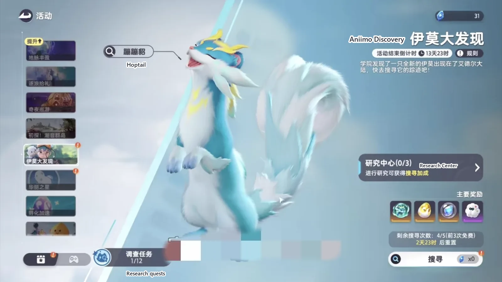
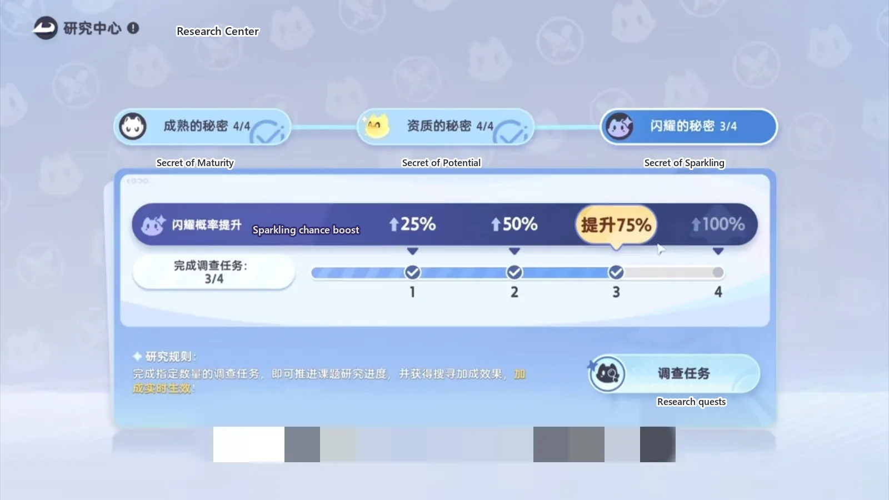
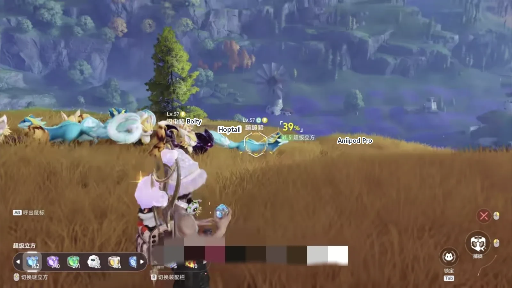

Home首页 / Guides攻略 / How to Catch a Sparkling Hoptail in Aniimo《伊莫》闪耀蹦蹦貂怎么抓？
Checked核对于 November 6, 20262026 年 11 月 6 日
How to Catch a Sparkling Hoptail in Aniimo《伊莫》闪耀蹦蹦貂怎么抓？
Five steps, in this order: find Hoptail in Aniimo Discovery, catch one and stop, run its two research quests, push the Sparkling chance up at the Research Center, then search again.五个步骤，顺序不能乱：在「伊莫大发现」里找到蹦蹦貂，抓一只就收手，带它打完两套调查任务，回研究中心把闪耀概率推上去，再回去搜寻。
A Sparkling Hoptail is not something you grind out. The whole route is five steps: find Hoptail in Aniimo Discovery, stop after the first catch, report back and send that one out to clear its research quests, push the Sparkling chance up at the Research Center, and then go back out and search. Get the order right and it turns up quickly; leave a step out and it drags.闪耀蹦蹦貂不是靠运气硬刷出来的。整条路只有五步：在「伊莫大发现」里找到蹦蹦貂，第一次抓到手就收手，回营地把这一只放出来打完调查任务，再回研究中心把闪耀概率抬上去，最后回去搜寻。顺序对了，它出现得很快；少走一步，速度就会慢很多。
Step two is the one people drop. The moment the first catch lands, stop — do not reach for a second one while you are there.五步里最容易漏的是第二步。第一次捕捉成功，马上停手，别顺手再去抓第二只。
The spawn is inside Aniimo Discovery刷新点在「伊莫大发现」里
Hoptail spawns inside the Aniimo Discovery event: join a search and it can turn up. If the Sparkling look is the thing you are after, this is the page to get right first.蹦蹦貂的刷新点在「伊莫大发现」里，参与搜寻就能碰到。想抓闪耀外观，先把这一页走对。

Catch one, and stop there抓到第一只，就收手
Stop the search as soon as the first catch lands, rather than taking a second one while you are already out there. Then go back to camp, report what you caught, and send this Hoptail out as the Aniimo you are playing. Skip that and the road to a Sparkling one gets considerably longer.第一次捕捉成功之后立刻停手，别顺手再去抓第二只。收手之后回营地先汇报，再把这只蹦蹦貂放出来出战。这一步省掉，拿到闪耀蹦蹦貂的速度会慢很多。
Send it out: five wins on each of two quests放它出来，两套任务各打赢五只
Hoptail (Wind · Lightning · DPS) is out in the field now, so take it through its research quests. Neither is hard: Aniimo Training and Aniimo Companion both ask for five Aniimo beaten with Hoptail doing the work. Finish them and the odds on the shiny star and on a Sparkling Hoptail both move up.蹦蹦貂（Hoptail，风 · 电 · 输出）放出来之后，带着它去完成调查任务。任务本身不难：伊莫历练和伊莫同行，都是拿蹦蹦貂击败 5 个伊莫就算完成。做完这几项，闪亮之星和闪耀蹦蹦貂的出现概率会一起往上抬。
Back to the Research Center, and push the bar回研究中心，把那条概率推上去
With the quests done, the Research Center is where you see what they bought: the row labelled Sparkling chance boost. It runs in four steps, 25% to 100%, and each batch of research quests pushes it one step to the right. The further it goes, the better the chance that your next search hands you the Sparkling look.做完回研究中心，你就能看到这几项任务抬的是闪亮之星和闪耀蹦蹦貂的出现概率。面板上的进度分四档，每做完一批调查任务往右推一档，推得越远，下一趟搜寻里碰到闪耀形态的机会越大。

Then go back out and search最后再回去搜寻
With the bar raised, go back out and search again. This time what you want is Hoptail (Sparkling) (Wind · Lightning · DPS). It is the same Aniimo as the plain one — the look is the only difference.概率抬上去之后，回去再搜寻，大概率就能刷出闪耀蹦蹦貂（Hoptail (Sparkling)，风 · 电 · 输出）。它和普通的蹦蹦貂是同一只伊莫，差的只是外观。

The order, once more按这个顺序走一遍
The order is the only thing on this route worth repeating: catch the first one in Aniimo Discovery and stop; report back, send Hoptail out, and beat five Aniimo in each of its two research quests; check the Research Center to see the odds have moved; then search again. Every step before that last search is adding to its odds — skipping the middle and grinding the wild only walks you in circles.顺序是这条线上唯一值得强调的东西：先在「伊莫大发现」里抓到第一只，抓到就收手；回营地汇报，把蹦蹦貂放出来，用它打赢伊莫历练和伊莫同行各五只；回研究中心确认闪耀概率抬上去；最后再回去搜寻。前面每一步都在给最后那一次搜寻加概率，跳过中间环节直接去野外刷，只会多绕很多圈。
More guides相关攻略
- Prismana, Sparkling, Umbral and the Shiny Star: Aniimo's Four Rare Terms, Explained《伊莫》四个词条：虹光、闪耀、幽黯、闪亮之星都是什么意思 — The two appearances and the one rating that decide whether an Aniimo counts as finished: which of them is limited, which is luck, which is nearly free, and the threshold that actually stops people.想让一只伊莫算得上毕业，标准是「双外观加一个闪亮之星」。这四个词条各管一段：哪个限量、哪个靠运气、哪个几乎白送，以及真正卡住大多数人的那道门槛。
- Aniimo Egg Heist PvP: Hypnyto, and One Mantis for Each Opponent《伊莫》抢蛋大作战 PVP：迷瞳翼带两螳螂 — A four-slot PvP party for Operation: Egg Heist: Hypnyto carries the damage, Fulmintis answers Hypnyto, Ignitis answers Fulmintis, and Glacy keeps the main one standing — plus the habits that get the egg home.一套抢蛋大作战的 PVP 队伍：迷瞳翼打伤害，电刺螳螂专收迷瞳翼、淬刃螳螂专收电刺螳螂，莹冰龙保住主 C —— 再加上把蛋平安搬回去的那几个习惯。